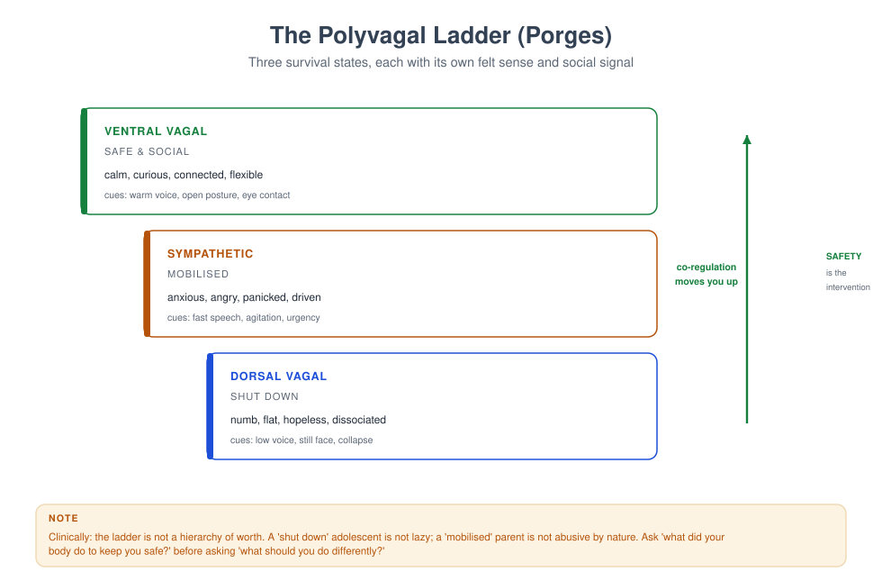
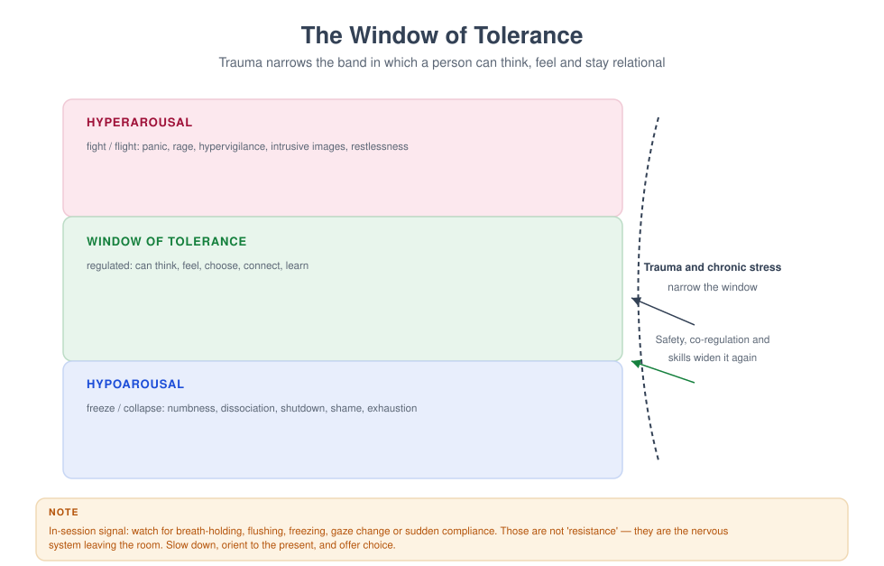
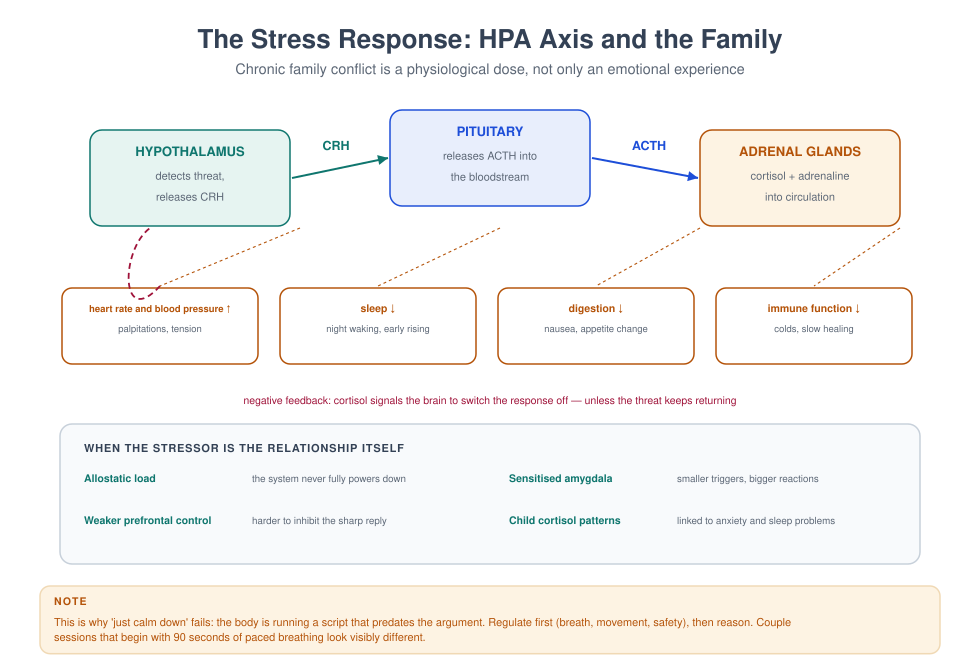
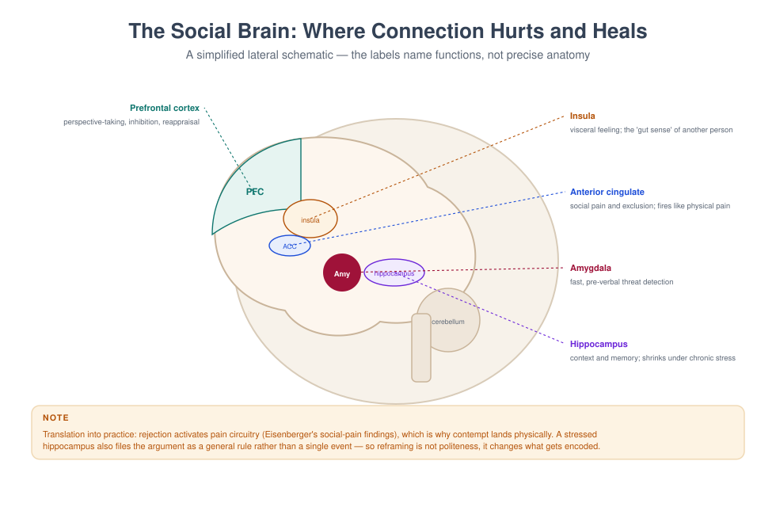

MFT 726 — Neurobiology of Relationships
Course leader's summary. Neuroscience does not replace systemic thinking; it supplies the mechanism. This course teaches what is well established, what is contested, and what is oversold — so that you can use physiology to help families regulate, without pretending to be a neuroscientist.
How to use this book
The field is full of confident claims that outrun the evidence. Each week distinguishes three levels: robust (well replicated), plausible (reasonable but uncertain), and popular (widely repeated, weakly supported). You are expected to be able to say which is which.
1. Course description
The course covers the autonomic nervous system and co-regulation; the social brain; stress physiology and the HPA axis; attachment as a biological system; memory and trauma; the physiology of couple conflict; sleep, exercise and substances; adolescent and ageing brains; neuroplasticity; and the responsible use of neuroscience in clinical communication.
2. Learning outcomes
| # | Outcome | Assessed |
|---|---|---|
| LO1 | Explain the autonomic, endocrine and central mechanisms relevant to relationships | Exam |
| LO2 | Use physiological knowledge to pace and structure sessions | Observed session |
| LO3 | Teach regulation skills accurately and without over-claiming | Skills test |
| LO4 | Explain the physiology of couple conflict and repair | Case study |
| LO5 | Distinguish robust from popular claims in the literature | Critical appraisal |
| LO6 | Integrate physiological and systemic formulations | Case study |
| LO7 | Communicate neuroscience to families in accessible language | Viva |
3. Assessment
| Component | Weight | Due |
|---|---|---|
| Critical appraisal of a "neuro" claim (1,500 words) | 20% | Week 5 |
| Regulation skills teaching (20 min) | 25% | Week 8 |
| Integrative case study (2,500 words) | 35% | Week 12 |
| Examination | 20% | Week 14 |
4. The fourteen-week plan
| Week | Topic | Practical |
|---|---|---|
| 1 | Why physiology belongs in family therapy | Physiology in a case |
| 2 | The autonomic nervous system | Vagal braking demonstration |
| 3 | Co-regulation and the dyad | Co-regulation observation |
| 4 | Polyvagal theory: use and critique | Ladder mapping |
| 5 | Appraisal due; stress and the HPA axis | Stress mapping |
| 6 | Attachment as biology | Attachment formulation |
| 7 | The social brain | Neuroanatomy for clinicians |
| 8 | Regulation skills teaching | Assessed |
| 9 | Memory, trauma and the body | Trauma-informed pacing |
| 10 | Couple conflict physiology | Flooding and repair |
| 11 | Sleep, exercise, substances and mood | Lifestyle screening |
| 12 | Case study due; adolescent and ageing brains | Developmental adaptation |
| 13 | Neuroplasticity and the limits of the claim | Critical reading |
| 14 | Integration and examination | Review |
Week 1 — Why physiology belongs in family therapy
Four clinical facts that physiology explains.
- Why a person cannot "just calm down" mid-argument (autonomic arousal; prefrontal resources offline).
- Why a parent's calm voice regulates a child (co-regulation before self-regulation).
- Why the same conversation is possible at 10 a.m. and impossible at 11 p.m. (fatigue, cortisol, blood sugar).
- Why trauma changes memory and reaction (implicit memory, sensitised threat detection).
What physiology does not explain. Meaning, culture, power, loyalty and choice. A physiological account is a mechanism, not a formulation. It tells you how the system works; it does not tell you what the family's behaviour means.
The rule of use. Use physiology to (a) pace the session, (b) teach regulation, (c) reduce shame ("your body is doing its job"), and (d) justify referral. Do not use it to explain away relational responsibility.
Week 2 — The autonomic nervous system
Two branches, three states (simplified).
- Sympathetic — mobilisation: heart rate up, pupils dilate, digestion down, muscles tense. Fight or flight.
- Parasympathetic — rest and digestion, plus (via the ventral vagal pathway) social engagement.
- Dorsal vagal shutdown — immobilisation: numbness, collapse, dissociation.
Robust findings. The autonomic system responds rapidly and largely outside awareness; arousal affects cognition; chronic stress alters baseline functioning; breathing and movement can shift arousal.
Plausible but contested. The precise mapping of "ventral vagal" states onto social behaviour is a theoretical proposal (Porges) with partial empirical support; the popular version often overstates what is known.
Clinical translation. Teach simple, reliable regulation: slower exhale, orienting, movement, grounding, cool water. These work regardless of which theory explains them.
Week 3 — Co-regulation
The concept. Regulation develops in relationships: a calm adult's voice, face, breathing and touch regulate an infant's arousal before the infant can regulate alone.
Robust. Infants synchronise with caregivers on multiple channels; caregiver depression and unresponsiveness affect infant physiology and behaviour; parental calm reduces child distress in experimental settings.
Clinical use.
- In session, your own regulated state is an intervention: slow your speech, lower your volume, breathe out slowly.
- Teach parents to co-regulate before reasoning: "First calm the body, then talk about the behaviour."
- In couple work, teach partners to be a regulating presence rather than a stimulus.
The asymmetry to remember. Co-regulation is not always available. A dysregulated parent cannot lend a calm nervous system. Support the adult first.
Week 4 — Polyvagal theory: use and critique

What the theory claims. Three phylogenetically ordered states — ventral vagal (safe/social), sympathetic (mobilised), dorsal vagal (shutdown) — with the ventral vagal system enabling social engagement via myelinated pathways.
What is useful clinically. The ladder metaphor helps clients recognise state; "neuroception" (unconscious threat detection) explains reactions that seem disproportionate; and the emphasis on safety and co-regulation is good practice.
What is contested. The evolutionary claims, the strict correspondence between anatomy and behaviour, and the tendency to treat the three states as discrete and universal. Critics note the evidence is thinner than the popularity suggests.
The professional stance. Use the metaphor, label it as a metaphor, and do not present contested claims as established fact. Clients benefit from the map, not from a lecture on vagal anatomy.

Week 5 — Stress and the HPA axis

The pathway. Hypothalamus (CRH) → pituitary (ACTH) → adrenal glands (cortisol) → feedback to the brain. Acute stress is adaptive; chronic stress produces allostatic load.
Robust findings. Chronic stress is associated with altered cortisol patterns, impaired immune function, sleep disruption, cardiovascular risk, and (in children) altered stress reactivity.
Plausible. Chronic relational conflict functions as a chronic stressor with measurable physiological effects. The size of the effect, and the direction of causality, remain debated.
Clinical translation.
- Screen for sleep, exercise, caffeine, alcohol, and medical conditions.
- Teach that physiological state affects the conversation: "You are not bad at communicating; you are tired at 9 p.m."
- Justify referral: persistent fatigue, weight change, palpitations, unexplained pain.
Week 6 — Attachment as biology
Robust. Attachment behaviours are observable and cross-culturally recognisable; caregiver responsiveness predicts later social and emotional outcomes; severe early deprivation has lasting effects (Romanian orphan studies).
Plausible. Attachment patterns are encoded as expectations and physiological set-points, and can be revised by later relationships.
Popular but overstated. Claims that specific brain regions "store" attachment, or that a single relationship "rewires" the brain in a defined number of weeks.
Clinical use. The attachment frame explains why a partner's tone matters more than their argument, and why therapy must provide a predictable relational experience before it can provide insight.
Week 7 — The social brain

Regions and functions (functionally, not precisely).
| Region | Function relevant to therapy |
|---|---|
| Prefrontal cortex | Perspective-taking, inhibition, reappraisal — offline under stress |
| Amygdala | Rapid threat detection, pre-verbal alarm |
| Insula | Interoception; the "gut sense" of another person |
| Anterior cingulate | Social pain, exclusion, conflict monitoring |
| Hippocampus | Context and memory; vulnerable to chronic stress |
| Mirror system (contested) | Imitation and resonance; overstated in popular accounts |
Robust. Social exclusion activates pain-related circuitry (Eisenberger); reappraisal changes emotional response; stress impairs prefrontal function.
Contested. "Mirror neurons" as an explanation of empathy; the "right brain/left brain" attachment story; "the amygdala hijack" as a precise mechanism.
Clinical translation. Rejection hurts physically — say so, because it reduces shame. Reappraisal works but requires a regulated brain — so regulate first.
Week 8 — Teaching regulation
Assessed: teach a regulation skill in 20 minutes so that a family can use it at home.
A teaching sequence.
- Explain briefly why the body matters (30 seconds, no lecture).
- Demonstrate the skill yourself.
- Practise together in the session.
- Troubleshoot ("what would make this hard at home?").
- Anchor it to a specific moment ("when you feel your jaw tighten").
- Write it down and review next session.
Four reliable skills.
| Skill | How | When |
|---|---|---|
| Extended exhale breathing | In for 4, out for 6–8, for 90 seconds | Before a difficult conversation |
| Orienting | Slowly look around, name five things | Dissociation, panic |
| Grounding | Feet, weight, texture, temperature | Trauma intrusion |
| Movement | Stand, walk, stretch, shake out | After conflict; restlessness |
Week 9 — Memory, trauma and the body
Robust. Traumatic memories are often fragmented and sensory; stress hormones affect memory consolidation; avoidance maintains fear; exposure-based treatments work.
Plausible. Implicit memory contributes to reactions without a narrative; the body "remembers" in the sense that physiological responses are conditioned.
Popular but false. That traumatic memories are stored "in the muscles" and released by massage; that the body has a literal memory independent of the brain; that a single technique can "release" trauma.
Clinical translation.
- Do not require a narrative before stabilisation.
- Expect sensory fragments and treat them as memory, not madness.
- Use grounding to establish "now" versus "then".
- Refer for trauma-specific therapy when indicated; do not improvise.
Week 10 — Couple conflict physiology
Robust. Physiological arousal during conflict predicts poor problem-solving; high arousal narrows attention and reduces empathy; recovery after conflict predicts relationship outcomes.
Gottman's flooding threshold (roughly 100 bpm) is a clinical heuristic rather than a precise cut-off, but the principle is sound: above a certain arousal, listening is physiologically difficult.
Clinical use.
- Teach a break protocol: agree a signal, separate for 20–30 minutes, self-regulate, return.
- Explain that the break is not abandonment; it is a condition for a useful conversation.
- Do not hold difficult conversations late at night, when tired, hungry, or after alcohol.
- In session, watch for signs of flooding and pause before continuing.
Week 11 — Sleep, exercise, substances and mood
Sleep. Robustly linked to mood, irritability, attention and emotion regulation. Ask about it in every assessment, and treat it as a clinical target, not a lifestyle issue.
Exercise. Modest but reliable effects on mood and anxiety; a useful adjunct.
Alcohol and cannabis. Disrupt sleep architecture, increase impulsivity, and reduce inhibition — all relevant to couple conflict and parenting.
Caffeine and screens. Contribute to sleep disruption; worth asking about without moralising.
The clinical frame. "Let us look at what your body is doing before we ask it to have a better conversation."
Week 12 — Adolescent and ageing brains
Adolescence. Robust: increased reward sensitivity, heightened peer influence, gradual maturation of regulatory systems. Popularly overstated: "the adolescent brain is not fully formed until 25" is a simplification that can infantilise young people.
Ageing. Robust: processing speed and some memory functions decline; crystallised knowledge and emotional regulation often improve; social selectivity increases. Popular: "the brain stops changing" — neuroplasticity continues.
Clinical use. Match expectations to capacity without lowering them; scaffold rather than lecture; and design sessions around the person's best time of day.
Week 13 — Neuroplasticity and its limits
Robust. Experience changes the brain; learning involves synaptic change; rehabilitation after injury exploits plasticity.
Oversold. "You can rewire your brain in 21 days"; "neuroplasticity means anything is possible"; specific protocols claiming to rebuild neural pathways in defined sessions.
The clinical use. Neuroplasticity is the reason therapy can work and the reason it takes time. Say that; it is both hopeful and honest.
Week 14 — Integration
A physiological formulation answers: what is the person's current state, what regulates them, what dysregulates them, and what does the family do that helps or harms. Add it to the systemic formulation, do not replace it.
The communication standard. If you cannot explain it to a 12-year-old and to a sceptical colleague, you do not understand it well enough to use it.
Glossary
Allostatic load — cumulative physiological cost of chronic adaptation to stress. Co-regulation — regulation of one person's arousal by another's presence and behaviour. Cortisol — the primary glucocorticoid stress hormone. HPA axis — hypothalamic–pituitary–adrenal axis, the endocrine stress pathway. Interoception — perception of internal bodily states. Neuroception — unconscious evaluation of safety and threat (Porges). Polyvagal theory — a theory linking autonomic states to social behaviour. Window of tolerance — the arousal range within which a person can think and connect.
Self-assessment
Multiple choice
1. Above a certain level of physiological arousal, a person: (a) listens better (b) finds listening and empathy physiologically difficult (c) becomes more rational (d) is unaffected
2. Co-regulation means: (a) self-soothing alone (b) one person's calm regulating another's arousal (c) medication (d) breathing only
3. The HPA axis ends with: (a) the amygdala (b) cortisol release from the adrenal glands (c) the hippocampus (d) the vagus nerve
4. Social exclusion: (a) is emotionally neutral (b) activates pain-related circuitry (c) improves resilience (d) has no physiological correlate
5. "The brain is fully formed at 25" is: (a) a precise finding (b) a simplification that can infantilise young people (c) false in every sense (d) irrelevant
6. Polyvagal theory is best described as: (a) fully established (b) clinically useful and partly contested (c) disproven (d) unrelated to therapy
7. Neuroplasticity means that: (a) change is instant (b) experience shapes the brain, over time (c) therapy is unnecessary (d) the brain stops changing at 25
8. A break protocol in couple conflict works because: (a) it avoids the issue (b) it allows arousal to fall before the conversation continues (c) it punishes the partner (d) it is recommended by law
9. Sleep should be assessed because it: (a) is not clinical (b) is robustly linked to mood and regulation (c) only matters for children (d) is a lifestyle preference
10. Physiological explanations should be used to: (a) replace formulations (b) pace sessions, teach regulation and reduce shame (c) assign blame (d) impress families
Answer key
1 b · 2 b · 3 b · 4 b · 5 b · 6 b · 7 b · 8 b · 9 b · 10 b
Short answer
- Name three robust and one contested claim in the neuroscience of relationships.
- Describe the HPA axis in five steps.
- Give a four-step teaching sequence for a regulation skill.
- Why is "regulate before reason" clinically important in couple conflict?
- What is the difference between a physiological account and a formulation?
Essay (choose one, 2,000 words)
- "Neuroscience has been oversold to therapists." Critically evaluate with three examples.
- Integrate a physiological and a systemic formulation for a couple with escalating conflict.
- How should a family therapist talk about the brain to a sceptical 15-year-old and a religious grandmother?
Further reading
- Porges, S. W. (2011). The Polyvagal Theory. Norton.
- Siegel, D. J. (2012). The Developing Mind (2nd ed.). Guilford.
- Sapolsky, R. M. (2004). Why Zebras Don't Get Ulcers (3rd ed.). Holt.
- Eisenberger, N. I., & Lieberman, M. D. (2004). Why rejection hurts. Trends in Cognitive Sciences, 8(7), 294–300.
- Cozolino, L. (2017). The Neuroscience of Psychotherapy (3rd ed.). Norton.
- Grossman, P., & Taylor, E. W. (2007). Toward understanding respiratory sinus arrhythmia. Biological Psychology, 74(2), 263–285. (Critique of polyvagal claims.)